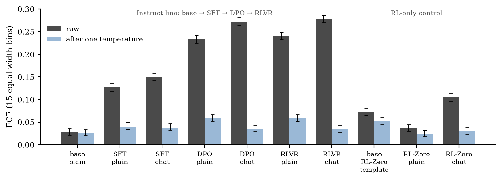

Which Post-Training Stage Hurts Calibration?
We scored every public Olmo 3 7B post-training checkpoint on all 14,042 MMLU questions. Expected calibration error rises from 0.025 at the base model to 0.278 at the final Instruct model. SFT and DPO each add about 0.12. The final RLVR step adds 0.006. One temperature parameter removes most of the rise.
1. A figure with two points
Figure 8 of the GPT-4 technical report shows two calibration curves on a subset of MMLU [1]. The confidence is the model’s probability on each answer letter A, B, C and D. The pre-trained model has an expected calibration error (ECE) of 0.007. The model after PPO has an ECE of 0.074. The report states that post-training hurts calibration significantly. A post on X by Wenhao Chai in October 2026 showed this figure again, in a discussion of calibration for agents [2].
The figure has two points. A current post-training pipeline has at least three stages: supervised fine-tuning (SFT), direct preference optimization (DPO), and reinforcement learning with verifiable rewards (RLVR). Two points cannot show which stage changes calibration. The intermediate GPT-4 checkpoints are not public, so nobody outside OpenAI can measure them.
Olmo 3 releases the checkpoint after each stage of its 7B Instruct pipeline [3]. It also releases RL-Zero, a model trained with RLVR directly from the same base model, with no SFT and no DPO. We measured MMLU calibration at each of these checkpoints. For this one model family, the results are:
- ECE rises from 0.025 (base) to 0.278 (final Instruct model, chat template).
- SFT and DPO each account for about half of the rise. The final RLVR step accounts for 2.5% (chat template) and 3.5% (plain prompt).
- RLVR applied directly to the base model adds 0.034 [0.027, 0.040], measured against a control that receives identical tokens.
- One temperature per checkpoint removes 90–96% of the rise under the chat template.
- The ability of confidence to separate right answers from wrong answers (AUROC) changes at one step only. SFT lowers it by 0.030 to 0.038.

2. Calibration error and temperature
For question i, the model gives a probability distribution p over the four answer letters. The confidence \(c_{i}\) is the largest entry of p. The prediction is the letter with that entry. A model is calibrated when its confidence equals its accuracy. For example, among the questions it answers with confidence 0.8, 80% are correct.
ECE puts the questions into 15 equal-width confidence bins. It then averages the difference between accuracy and mean confidence over the bins:
Here \(n_{b}\) is the number of questions in bin b, and N is the total number of questions. \(\mathrm{acc}_{b}\) is the accuracy in bin b, and \(\mathrm{conf}_{b}\) is the mean confidence in bin b. ECE is 0 for a perfectly calibrated model. We also computed ECE with 15 equal-count bins. For every checkpoint, it agrees with the equal-width ECE to within 0.002.
Temperature scaling divides the four letter logits by one scalar T before the softmax [11]:
Here \(z_{k}\) is the logit of letter k. A temperature above 1 makes every distribution flatter. A temperature below 1 makes every distribution sharper. T does not change the predicted letter, so accuracy stays the same. We fit T on a random 20% of the questions by minimizing the negative log-likelihood of the correct letter. We report ECE before and after scaling on the other 80%.
One scalar can correct one kind of error: confidence that is too sharp, or too flat, by the same factor everywhere. We call this a scale error. A temperature cannot correct confidence that no longer separates right answers from wrong answers. We call this a ranking error and measure it with AUROC. AUROC is the probability that a randomly chosen correct answer has higher confidence than a randomly chosen wrong answer. It is 0.5 when confidence carries no information, and it depends only on the order of the confidences.
3. Setup
Checkpoints. All five checkpoints are public on Hugging Face. We pinned each one to a commit.
| Stage | Repository | Training |
|---|---|---|
| Base | allenai/Olmo-3-1025-7B | pre-training |
| SFT | allenai/Olmo-3-7B-Instruct-SFT | base, then SFT |
| DPO | allenai/Olmo-3-7B-Instruct-DPO | SFT, then DPO |
| RLVR (final Instruct) | allenai/Olmo-3-7B-Instruct | DPO, then RLVR |
| RL-Zero Mix | allenai/Olmo-3-7B-RL-Zero-Mix | base, then RLVR on math, code and instruction-following data [3] |
Data. We used the full MMLU test set: 14,042 questions in 57 subjects [4]. The five few-shot examples come from the dev split, one from each of five subjects chosen with a fixed seed. Every checkpoint sees the same five examples.
Prompts. We used two prompt formats.
- Plain. The classic MMLU text prompt. Each question ends with “Answer:”. We read the next-token logits of “ A”, “ B”, “ C” and “ D”. We used this format for all checkpoints.
- Chat. The checkpoint’s own chat template. Each few-shot example is one user turn and one assistant turn, for example “The answer is C.” The test turn ends with the assistant prefix and the text “The answer is”. We read the same four logits. We used this format for the post-trained checkpoints.
The base model has no chat template. So the plain ladder and the chat ladder both start from the base model’s plain score. When there is no system message, the Olmo 3 chat templates insert a default system prompt. We kept this released behavior.
Statistics. Each 95% interval comes from 1,000 bootstrap resamples of the questions. A difference between two checkpoints uses a paired bootstrap on the same questions.
Pre-registration. We wrote the protocol, the metrics and our predictions before the full runs. We added two items later, and each one before the data it concerns: a loading fix for RL-Zero Mix (section 10) and the matched-template control (section 5). Some predictions failed. For DPO, we predicted an ECE of 0.08–0.20 with the plain prompt and 0.10–0.25 with the chat template. The measured values are 0.234 and 0.271.
Hardware. All runs used bf16 on one Apple M4 Pro laptop. Scoring took 0.31–0.41 seconds per question, which is 1.2–1.6 hours for each checkpoint and prompt format.
4. SFT and DPO account for almost all of the rise
Table 1 gives the change at each step of the Instruct pipeline. Each difference is computed on the same 14,042 questions.
Table 1. Change at each stage. 95% paired bootstrap intervals in brackets.
| Step | Prompt | Change in ECE | Change in AUROC | Change in accuracy |
|---|---|---|---|---|
| Base → SFT | chat | +0.126 [+0.116, +0.134] | −0.030 [−0.039, −0.022] | −0.032 [−0.039, −0.025] |
| SFT → DPO | chat | +0.121 [+0.116, +0.126] | −0.005 [−0.012, +0.002] | +0.006 [+0.001, +0.011] |
| DPO → RLVR | chat | +0.006 [+0.003, +0.009] | +0.004 [−0.001, +0.009] | −0.004 [−0.007, −0.001] |
| Base → SFT | plain | +0.105 [+0.095, +0.113] | −0.038 [−0.046, −0.030] | −0.039 [−0.046, −0.031] |
| SFT → DPO | plain | +0.104 [+0.100, +0.109] | −0.004 [−0.011, +0.003] | +0.005 [+0.000, +0.009] |
| DPO → RLVR | plain | +0.008 [+0.004, +0.010] | +0.000 [−0.004, +0.005] | −0.000 [−0.003, +0.002] |
From the base model to the final Instruct model, ECE rises by 0.253 with the chat template and by 0.217 with the plain prompt. SFT accounts for 50% (chat) and 48% (plain) of the rise. DPO accounts for 48% in both formats. The final RLVR step accounts for 2.5% (chat) and 3.5% (plain). The SFT and DPO intervals overlap, so these data do not rank the two steps.
DPO raises ECE by 0.10–0.12, and accuracy changes by only +0.005 to +0.006 at the same step. So DPO makes the model more confident without making it more often correct. The RLVR step is small but not zero: its interval excludes 0 in both formats.
Every checkpoint after SFT in the Instruct pipeline is overconfident. Its mean confidence exceeds its accuracy by 0.130 to 0.278. For each of these checkpoints, ECE equals this confidence–accuracy gap to three decimals. This equality holds only when the model is overconfident in every confidence bin. So the miscalibration has one sign over the whole confidence range. The base model has an ECE of 0.025 and a gap of 0.016, so its small errors have mixed signs.
The first step of the chat ladder changes two things: the weights and the prompt format. The later chat steps keep the format fixed, because SFT, DPO and the final model share one chat template. The plain ladder keeps the format fixed at every step. But the post-trained models handle the plain format poorly (section 8). The two ladders give the same pattern.
5. RL alone, with a matched template
The RLVR step in the Instruct pipeline starts from a model that DPO has already made overconfident. RL-Zero Mix answers a different question: what does RLVR do to the base model directly?
With the plain prompt, RL-Zero Mix changes ECE by +0.011 [+0.004, +0.017]. AUROC and accuracy do not change within the intervals.
With its chat template, RL-Zero Mix has an ECE of 0.106. This is 0.081 above the base model’s plain score. But that comparison changes two things. The weights change. The input also changes, from a plain prompt to a chat transcript with a default system prompt, role tokens and multi-turn examples. The base model was never trained on this format, so the format alone can change its calibration.
A control separates the two effects. We ran the base model’s weights with RL-Zero Mix’s tokenizer and chat template. Both runs tokenize the same text with the same tokenizer, and the two models share one vocabulary. So the base model receives the same token ids as RL-Zero Mix: a 764-token few-shot prefix, followed by each question. Only the weights differ. The base model scores an ECE of 0.072 [0.065, 0.079] under this template.
The 0.081 difference then splits into two parts:
- Template effect (base with plain prompt → base with RL-Zero template): ECE +0.047 [+0.039, +0.054].
- RL effect (base → RL-Zero Mix, same template and same tokens): ECE +0.034 [+0.027, +0.040].
The RL effect is a scale error. AUROC changes by +0.002 [−0.005, +0.009]. After one temperature, RL-Zero Mix reaches an ECE of 0.029 [0.024, 0.038]. The base model under the same template reaches only 0.052 [0.045, 0.060].
So the template adds an error that a temperature removes only in part (R = 0.43 in Table 2). RL adds an error that a temperature removes. RL also lowers accuracy by 0.011 [0.005, 0.016].
Before running this control, we wrote down a threshold for a real RL effect: an interval that excludes 0 and a point estimate of at least 0.03. The effect passes, by a small margin. Its lower bound, 0.027, is below 0.03. For comparison, the SFT and DPO steps are each 3.6 to 3.8 times larger. RL-Zero Mix trains on math, code and instruction-following data. Most MMLU subjects lie outside these domains.
6. A scale error, mostly
To measure how much of the rise one temperature removes, we use the recovered fraction R:
\(\mathrm{ECE}_{\mathrm{raw}}\) and \(\mathrm{ECE}_{T}\) are a checkpoint’s ECE before and after temperature scaling, on the 80% evaluation split. \(\mathrm{ECE}_{T,\mathrm{base}}\) is the base model’s ECE after temperature scaling, 0.025. We use it as the lowest value this protocol reaches. R = 1 means that the temperature brings the checkpoint down to the base model’s level.
Table 2. Temperature scaling. T is fit on 20% of the questions. ECE is computed on the other 80%. Intervals for the scaled ECE in brackets.
| Checkpoint | Prompt | T | ECE raw | ECE after T | R |
|---|---|---|---|---|---|
| Base | plain | 1.03 | 0.027 | 0.025 [0.020, 0.034] | — |
| SFT | chat | 1.86 | 0.150 | 0.037 [0.033, 0.046] | 0.90 |
| DPO | chat | 4.11 | 0.272 | 0.035 [0.029, 0.044] | 0.96 |
| RLVR (final) | chat | 4.30 | 0.278 | 0.034 [0.028, 0.044] | 0.96 |
| SFT | plain | 1.63 | 0.128 | 0.040 [0.034, 0.050] | 0.85 |
| DPO | plain | 2.46 | 0.234 | 0.059 [0.052, 0.067] | 0.84 |
| RLVR (final) | plain | 2.58 | 0.241 | 0.059 [0.052, 0.067] | 0.84 |
| RL-Zero Mix | chat | 1.64 | 0.105 | 0.029 [0.024, 0.038] | 0.95 |
| RL-Zero Mix | plain | 1.14 | 0.036 | 0.024 [0.018, 0.032] | 1.11 |
| Base, RL-Zero template | chat | 1.24 | 0.072 | 0.052 [0.045, 0.060] | 0.43 |
With the chat template, R is 0.90 for SFT and 0.96 for DPO and the final model. After scaling, these three checkpoints have an ECE of 0.034–0.037. This is about 0.01 above the base model. The fitted temperature grows along the pipeline: 1.86 after SFT, 4.11 after DPO and 4.30 after RLVR. A temperature of 4.30 means that the final model’s letter logits are about four times too large for its accuracy.
With the plain prompt, R is lower, 0.84–0.85. The scaled ECE stays at 0.040–0.059. We have not isolated the cause. One candidate is the prompt itself: with the plain prompt, the post-trained models put only 49–70% of the next-token probability on the four letters.
AUROC changes at one step only. SFT changes it by −0.030 [−0.039, −0.022] with the chat template and by −0.038 [−0.046, −0.030] with the plain prompt. The same step lowers accuracy by 0.032 and 0.039. AUROC depends on which questions the model answers correctly, so part of this drop can come from the accuracy change.
DPO, the final RLVR step and RL from the base model leave AUROC unchanged within the intervals. Our pre-registered rule labels an AUROC drop of 0.02 or more as a ranking error. By that rule, SFT adds a small ranking error, and DPO and RLVR add only scale error.
This pattern matches an older result. Kadavath et al. found that a 52B RLHF policy looked badly calibrated on MMLU and other tasks, and that one temperature, T = 2.5, largely corrected it [5]. They also noted that more intensive RL might distort calibration in ways a temperature cannot correct. In Olmo 3 7B on MMLU, the stages that need large temperatures are SFT and DPO. RLVR adds little, and what it adds is scale.
7. What is known, and what this adds
The general finding is known: post-training makes language models overconfident. Earlier work shows it in several settings:
- The GPT-4 report compares the pre-trained model and the model after PPO on an MMLU subset [1].
- Kadavath et al. show that an RLHF policy is miscalibrated and that a single temperature largely corrects it [5].
- Oh and Hwang compare base and aligned models across open model families, tasks, metrics and confidence-extraction methods, including option-letter logits. Under careful measurement, alignment consistently harms calibration [6].
- Hu et al. find a severe loss of calibration after alignment and recover much of it by interpolating the weights before and after alignment [7].
- Luo et al. show that post-trained models are overconfident and use the pre-trained model to set the temperature without labels [8].
- Sanz-Guerrero et al. separate the post-training algorithm from the chat format. Both increase overconfidence [9]. Section 5 measures a related template effect.
- Huang et al. follow the Tülu 3 pipeline on Llama-3.1-8B: base, SFT, DPO and RLVR [10]. Their metric is the share of factual questions answered wrongly with a confidence of at least 0.95. On 22,267 PopQA and TriviaQA questions, it rises from 0.28% (base) to 1.16% (SFT), 2.79% (DPO) and 3.83% (RLVR).
Within the work we found, this post adds three measurements:
- Stage-by-stage multiple-choice calibration on one fully open pipeline, with a paired interval for each step.
- RL applied directly to the base model, compared against a control that receives identical tokens. This separates the effect of RL from the effect of the chat template.
- Temperature recovery at each stage, which separates scale error from ranking error.
One difference from Huang et al. needs a note. In their Tülu 3 ladder, RLVR still raises confident errors, from 2.79% to 3.83%. In Olmo 3, RLVR raises ECE by 0.006. The model family, the metric and the task all differ, and we have not run Tülu 3. So these two results do not test the same claim.
8. Limitations
- One family, one size. All results are for Olmo 3 at 7B. We planned the same measurement on Tülu 3 8B. It did not run, because its base model is a gated repository and each 7B–8B download took about two hours on our connection.
- Contamination. MMLU has been public since 2020. It may appear in pre-training or post-training data. Contamination raises accuracy and can change confidence. We did not test for it.
- One confidence definition. We measure option-letter probabilities from one forward pass, renormalized over four letters. This is confidence conditional on the four options. It says nothing about verbalized confidence (“I am 80% sure”), about confidence in free-form answers, or about confidence after reasoning. Much recent work on RLVR and calibration studies those settings.
- The plain prompt. With the plain prompt, the post-trained models put only 49% (SFT), 59% (DPO) and 70% (final) of the next-token probability on the four letters. The rest goes to other tokens. Renormalizing over four letters hides this. With the chat template, the letter mass is 0.989 or higher for every post-trained checkpoint. For this reason, we treat the chat numbers as the primary result.
- One run per checkpoint. Each stage is one released checkpoint. We evaluated it with one prompt wording, one set of five examples and one 20/80 split. The intervals cover resampling of questions only. They do not cover training seeds, prompt wording or the choice of examples.
- Released checkpoints. Each stage has its own data and hyperparameters. The differences we measure belong to these released checkpoints. A claim about SFT or DPO as methods needs controlled retraining.
- Numerics. We used bf16 and reused the cached few-shot prefix across questions. On 200 random questions (SFT, plain prompt), we compared this with an uncached forward pass for each question. The mean absolute probability difference was 0.003, the maximum was 0.030, and the predicted letter agreed on all 200.
- ECE bias. Binned ECE has a finite-sample bias. Part of the base model’s 0.025 after scaling comes from this bias.
9. Next measurements
Three measurements would test the scope of these results:
- The Tülu 3 8B pipeline with the same protocol. This tests whether the pattern holds in a second family.
- The RL-Zero Math, Code and IF checkpoints, one at a time. This tests whether the RL training domain changes the RL effect.
- The same Olmo 3 ladder with verbalized confidence. This tests whether the scale-error result holds for confidence that the model states in text.
10. Reproducing the numbers
Two scripts produce every number in this post.
- score.py scores one checkpoint with one prompt format.
- It encodes the 5-shot prefix once and reuses its key-value cache for every question. It groups questions of similar length into batches.
- It checks that “ A”, “ B”, “ C” and “ D” are single tokens. For each question, it stores the four-letter softmax and the total probability on the four letters.
- An optional flag compares the cached result with an uncached forward pass.
- One flag loads the tokenizer and chat template from another checkpoint. We used it for the control in section 5.
- One flag loads the model configuration from another checkpoint. We used it for RL-Zero Mix. Its configuration declares a model type that transformers 5.19 cannot load. Its hyperparameters and all 355 weight names are identical to the base model’s, so we loaded its own weights with the base configuration.
- analyze.py reads the per-question files. It computes accuracy, ECE with 15 equal-width bins, ECE with 15 equal-count bins, Brier score, AUROC, the confidence–accuracy gap and negative log-likelihood. It fits T on the 20% split with a grid search over log T, followed by a golden-section refinement. It computes the bootstrap and paired-bootstrap intervals. It writes all results to one JSON file and draws Figure 1.
Environment: PyTorch 2.14.1 with the MPS backend, transformers 5.19.0, bf16, one Apple M4 Pro. Pinned revisions:
| Repository | Revision |
|---|---|
| allenai/Olmo-3-1025-7B | a81bae42db3975be1671e27b9c9a56da1a9f980f |
| allenai/Olmo-3-7B-Instruct-SFT | e1452fc572d51966ff4aaeb25118b891eb93e549 |
| allenai/Olmo-3-7B-Instruct-DPO | b33130b7de49f0c2553b5c2b3bc8409ff3e627d1 |
| allenai/Olmo-3-7B-Instruct | 6e5971d9eba42665f5bd5a0fcf047f299ce1dccc |
| allenai/Olmo-3-7B-RL-Zero-Mix | 73b2b1a50d94aec859e22c9b4a524416b5a3a739 |
The two scripts, the per-question probabilities for all ten conditions and the metrics file are not yet in a public repository. They are available on request.
- OpenAI, GPT-4 Technical Report, arXiv:2303.08774, 2023. Figure 8.
- Wenhao Chai, post on X, October 2026.
- Team Olmo, Olmo 3, arXiv:2512.13961, 2025. Checkpoints: allenai on Hugging Face. RL-Zero Mix model card: allenai/Olmo-3-7B-RL-Zero-Mix.
- Hendrycks et al., Measuring Massive Multitask Language Understanding, ICLR 2021.
- Kadavath et al., Language Models (Mostly) Know What They Know, arXiv:2207.05221, 2022. Section 3.3 and Figure 9.
- Hongseok Oh and Wonseok Hwang, Does Alignment Tuning Really Break LLMs’ Internal Confidence?, BlackboxNLP 2024.
- Tiancheng Hu, Benjamin Minixhofer and Nigel Collier, Navigating the Alignment-Calibration Trade-off: A Pareto-Superior Frontier via Model Merging, Findings of ACL 2026.
- Beier Luo, Shuoyuan Wang, Sharon Li and Hongxin Wei, Your Pre-trained LLM is Secretly an Unsupervised Confidence Calibrator, NeurIPS 2025.
- Mario Sanz-Guerrero, Manuel Mager and Katharina von der Wense, Large Language Models Are Overconfident in Their Own Responses, Findings of ACL 2026.
- Qingjia Huang et al., The Alignment Paradox: How Post-Training Amplifies Confident Hallucinations in Language Models, arXiv:2609.32617, 2026. Appendix B.2, Table 10.
- Chuan Guo, Geoff Pleiss, Yu Sun and Kilian Q. Weinberger, On Calibration of Modern Neural Networks, ICML 2017.
Figure 1 and Tables 1–2 are computed by the author from the released checkpoints listed above.